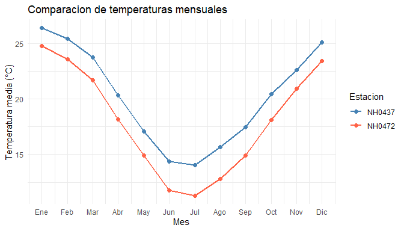

Paquete de R desarrollado para Programación II que permite leer, resumir y visualizar datos meteorológicos de estaciones del INTA.
Instalación
Instalá el paquete desde GitHub:
install.packages("remotes")
remotes::install_github("Santiago-Jauregui7/meteodata")Datos incluidos
El dataset estaciones contiene 95.681 observaciones y 35 columnas. Reúne datos diarios de cinco estaciones: NH0472, NH0910, NH0046, NH0098 y NH0437.
library(meteodata)
dim(estaciones)
#> [1] 95681 35
unique(estaciones$id)
#> [1] "NH0472" "NH0910" "NH0046" "NH0098" "NH0437"
head(
estaciones[
c("id", "fecha", "temperatura_abrigo_150cm")
]
)
#> id fecha temperatura_abrigo_150cm
#> 1 NH0472 1961-07-01 11.1
#> 2 NH0472 1961-07-02 5.5
#> 3 NH0472 1961-07-03 6.0
#> 4 NH0472 1961-07-04 NA
#> 5 NH0472 1961-07-05 12.4
#> 6 NH0472 1961-07-06 11.0La columna id identifica la estación y fecha indica el día de la observación. La temperatura de abrigo a 150 cm está expresada en grados Celsius.
Los datos provienen del repositorio del curso.
Leer datos de una estación
leer_datos() recibe el identificador de una estación y la ruta de un archivo CSV. Si el archivo existe, lo lee directamente. Si todavía no existe, intenta descargarlo y guardarlo.
Este ejemplo requiere conexión a Internet:
datos <- leer_datos(
id = "NH0437",
ruta = "datos/NH0437.csv"
)
head(datos)Resumir temperaturas
tabla_resumen_temperatura() calcula la temperatura mínima, máxima, promedio y el desvío estándar de cada estación.
tabla_resumen_temperatura(estaciones)
#> # A tibble: 5 × 5
#> id minima maxima promedio desvio
#> <chr> <dbl> <dbl> <dbl> <dbl>
#> 1 NH0472 0.55 34.8 18.0 5.94
#> 2 NH0910 0 35.2 17.7 6.12
#> 3 NH0046 -0.25 34.6 17.3 5.90
#> 4 NH0098 -17.4 37.4 18.6 5.98
#> 5 NH0437 2.1 36.3 20.2 5.77El argumento ids permite seleccionar una o varias estaciones:
tabla_resumen_temperatura(
estaciones,
ids = c("NH0437", "NH0472")
)
#> # A tibble: 2 × 5
#> id minima maxima promedio desvio
#> <chr> <dbl> <dbl> <dbl> <dbl>
#> 1 NH0437 2.1 36.3 20.2 5.77
#> 2 NH0472 0.55 34.8 18.0 5.94Los valores faltantes se excluyen de los cálculos. Si una estación no tiene temperaturas válidas, sus estadísticas se muestran como NA.
Graficar temperaturas mensuales
grafico_temperatura_mensual() calcula y grafica la temperatura promedio de cada mes del calendario para cada estación. Reúne las observaciones del mismo mes de los distintos años.
Podemos seleccionar estaciones y personalizar los colores y el título:
seleccion <- estaciones[
estaciones$id %in% c("NH0437", "NH0472"),
]
grafico_temperatura_mensual(
seleccion,
colores = c(
NH0437 = "steelblue",
NH0472 = "tomato"
),
titulo = "Comparacion de temperaturas mensuales"
)
Documentación
La documentación completa está en el sitio web de meteodata.
Para comenzar, consultá la guía de uso.
También podés consultar la ayuda de las funciones desde R:
?leer_datos
?tabla_resumen_temperatura
?grafico_temperatura_mensualContribuciones
Para reportar problemas o proponer mejoras, consultá la guía de contribución.
Todas las personas que participen deben respetar el código de conducta.
Licencia
El código del paquete se distribuye bajo licencia MIT. Consultá el archivo LICENSE.md.